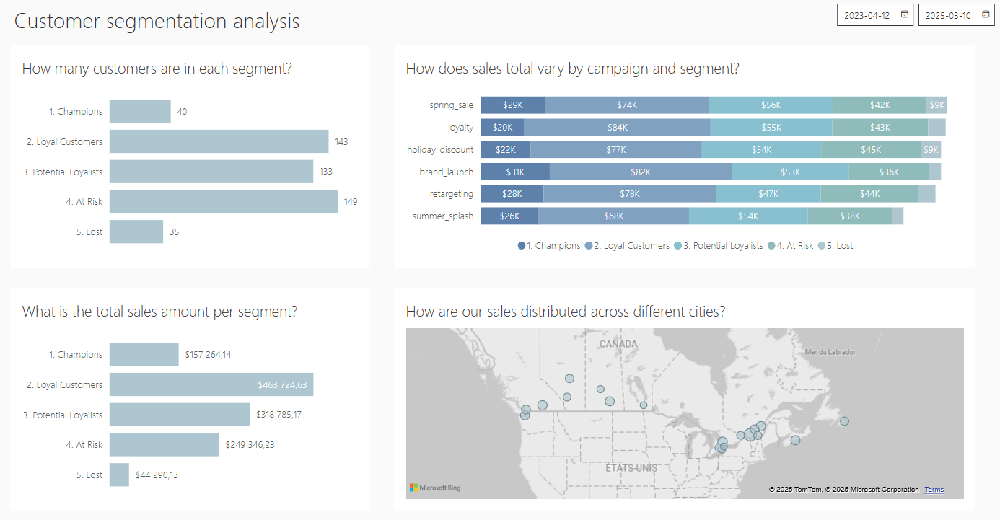

Analyse de la segmentation client


Présentation du projet
Suite à l’analyse RFM réalisée en SQL, j’ai enrichi la base de données en créant deux nouvelles tables (Customers et Web Analytics) permettant une analyse plus complète du comportement client. À des fins d’exercice, les données ont été entièrement générées en Python.
Fonctionnement
Le tableau de bord interactif a été développé au sein de Power BI et structuré autour de 4 visualisations clés :
- Répartition des clients par segment RFM (Champions, Loyal Customers, Potential Loyalists, At Risk, Lost)
- Chiffre d’affaires total par segment
- Performance des ventes par campagne marketing et segment
- Distribution géographique des ventes (par ville)
En amont, dans Power Query, j’ai optimisé les données en :
- Créant une table calendrier (base journalière) pour l’analyse temporelle
- Harmonisant les formats des champs de type date pour assurer la cohérence des données
Avantages du tableau de bord
Ce tableau de bord offre une vision de la valeur client, permettant d’identifier :
- Les segments à fort potentiel (à stimuler par des campagnes ciblées)
- Les clients en risque de désabonnement (pour des actions de rétention)
- Les zones géographiques les plus rentables (pour optimiser les investissements).
Ces différents points peuvent permettre plusieurs actions à haut niveau de la part de l’équipe marketing.
Perspectives d’évolution
- Création d’un système d’alerte pour les clients à risque d’attrition
- Développement d’un module de recommandation produit par segment
- Automatisation des rapports par segment pour les équipes marketing.
Temps de lecture: 2 min
• 251 mots